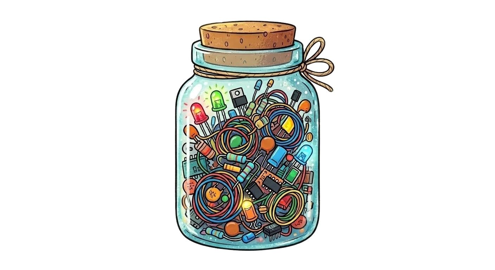

Kavanozda kaç tane var? How many items are in the jar?
Tahminini yaz, kalabalığın ne düşündüğünü gör. Enter your guess and see what the crowd thinks.
Senin tahminin: Your guess:
- Bugüne kadar tahmin yapan kişi sayısı: Total number of guesses so far:
- Şu anki kitle ortalaması: Current crowd average:
- Şu an ortalaması gerçeğe en yakın fakülte: Faculty closest to the actual value:
Deney hakkında About the Experiment
1906'da İngiliz bilim insanı Sir Francis Galton, Plymouth'taki bir hayvan fuarına gitti. Ziyaretçiler bir öküzün kesilip temizlendikten sonraki ağırlığını tahmin ediyordu. Aralarında çiftçiler de vardı, hiçbir şey bilmeyenler de. Galton yaklaşık 800 biletin içinden okunabilen 787'sini topladı ve ortalamaya baktı. In 1906, British scientist Sir Francis Galton visited a livestock fair in Plymouth. Visitors were guessing the weight of an ox after it was slaughtered and dressed. There were farmers as well as people who knew nothing among them. Galton collected 787 legible tickets out of about 800 and looked at the average.
Kalabalığın ortancası 1207 librelikti. Öküz gerçekte 1198 librelik geliyordu; hata yüzde 1'in altındaydı. Tek tek insanlar ciddi şekilde yanılıyordu, ama hatalar birbirini götürdü. Galton bulguyu 1907'de Nature dergisinde "Vox Populi" adıyla yayımladı. Bugün bu olguya Kitlelerin Bilgeliği diyoruz. The median of the crowd was 1207 lbs. The ox actually weighed 1198 lbs; the error was under 1 percent. Individual people were seriously wrong, but the errors canceled each other out. Galton published the finding in the journal Nature in 1907 under the name "Vox Populi". Today we call this phenomenon the Wisdom of the Crowds.
Bu deneyde aynı şeyi kavanozdaki objelerle deniyoruz. Herkes bağımsız tahmin ettiğinde, kitle en iyi bireyden daha iyi olabilir mi? In this experiment, we are trying the same thing with objects in a jar. When everyone guesses independently, can the crowd be better than the best individual?
El-Biruni kimdir? Who is Al-Biruni?
El-Biruni (973-1048), bugünkü Özbekistan'daki Harezm bölgesinde doğdu. Astronomi, matematik, coğrafya, tarih, eczacılık ve mineralojiyi birlikte çalışan bir bilgindi. Uzun yıllar Gazneli Mahmud'un sarayında yaşadı ve Hindistan'a yaptığı gezilerde yerel bilimi doğrudan gözlemledi. Al-Biruni (973-1048) was born in the Khwarazm region in present-day Uzbekistan. He was a polymath who studied astronomy, mathematics, geography, history, pharmacology, and mineralogy. He lived at the court of Mahmud of Ghazni for many years and directly observed local science during his travels to India.
Dünyanın yarıçapını dağ yüksekliği ve ufuk açısıyla ölçen zekice bir yöntem geliştirdi. Kitâbü'l-Hind adlı eseri karşılaştırmalı kültür araştırmasının öncülerinden sayılır. el-Kanûn el-Mes'ûdî astronomi ansiklopedisidir; es-Saydana ise ilaç bilgisi üzerinedir. He developed an ingenious method of measuring the radius of the earth using mountain height and the angle of the horizon. His work Kitab al-Hind is considered one of the pioneers of comparative cultural studies. Al-Qanun al-Mas'udi is an encyclopedia of astronomy; as-Saydana is on pharmacology.
Dünyanın kendi ekseni etrafında dönme ihtimalini ciddiyetle tartışması da dikkat çekicidir. Yöntemi net: gözlemle, ölç, karşılaştır. It is also noteworthy that he seriously discussed the possibility of the Earth rotating on its own axis. His method is clear: observe, measure, compare.